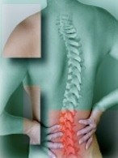

Charmaine L. Tu, D.C.
chiropractor
Low back pain, known as lumbago,is more common than one may think. It ranges from a dull nagging ache to a sharp, breathtaking pain with associated numbness and tingling in the legs. About 85 percent of our population will suffer disabling low back pain at least once in their lives. I’m still amazed by the number of people who come through the office doors in discomfort. Daily, I hear, “How did this happen?” “I exercise!” and “How can I prevent this from happening again?” With this in mind, I hope this article will help all those who are
suffering or have suffered from low back pain.
One of man’s strongest structures in architectural design is the bridge or arch. Our spine is modeled similarly, but with three main curves. When we have bad posture and move away from the neutral curvature of our spine, our bodies function in a compromised state.
Our muscles not only work harder, but stress to our joints increases and symptoms of discomfort such as low back pain can surface.
Here are my five tips on how to prevent and manage low back pain:
■ Ice first. I cannot begin to tell you how many times I have heard, “Well my mom told me to put heat on it.” Always start with ice for 15 to 20 minutes, with a thin layer of paper towel to protect the skin. The ice serves to decrease inflammation and promotes healing. The frequency with which you ice will depend on the severity of your injury.
■ Maintain good posture. I often advise my patients to take three small post-it notes and put them in the most common rooms or places that they visit throughout the day. For example: the car, the office, the bathroom. The post-it notes act as cues or a reminder to
“sit up straight, shoulders back and down, and tuck your chin back.” Another postural suggestion is to use a lumbar support when sitting. Placing a rolled up towel behind
your waistline can help relieve a lot of stress to the low back while sitting. A rolled-up jacket also works well for the car and airplanes.
■ Continuing to exercise is important but don’t do what hurts! Proper exercise can help speed recovery and prevent and reduce risk of low back pain. It is better to continue with regular activity because bed rest can cause muscles to seize, often worsening low back pain. By the same token, it is important not to further injure your back. For example, if you are experiencing a burning pain in your low back while performing sit-ups, don’t do them!
■ Don’t hold your breath when you sneeze! Holding your breath during a sneeze increases the pressure within your spine and can potentially cause your vertebral disc to bulge or herniated towards a nerve.
■Have your mattress checked to ensure that it is supportive. Proper rejuvenation to your back will occur if there is no stress to it while you sleep. Sleeping on your back or side are the best positions. When sleeping on your back, place a pillow under your legs to relax the low back muscles. When on your side, place a pillow in between your legs to avoid twisting of the low back.
Low back pain affects both our work and play. If your back begins to feel tired at work, have your work area ergonomically evaluated. If you are suffering from low back discomfort extending for more than a week, have it carefully evaluated by a professional. Your
chiropractor, physiotherapist or family physician will be able to help you. Preventive measures greatly reduce the risk of recurring low back pain. Recognizing bodily cues and making simple life style changes not only reduce that risk, but can enhance your overall health.


Suffering from Low Back Pain?
Here are some tips to cope.
Written by Charmaine L. Tu, D.C.
26 July 2006
The Almanac